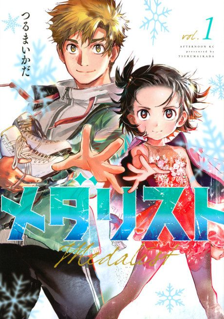

Animeter
← Rankings Anime
Anime
Manga2025 · Drama, Psychological, Sports
Medalist
メダリスト
AniList8.3
Animeter—
Season 113 ep
MangaCh. 29
Arcs
Episodes numbered continuously across both seasons (Season 2 episode 1 = episode 14), as on Wikipedia.
Story arcFiller arc22 episodes
1
Season 1
A Genius on the Ice
Failed ice dancer Tsukasa Akeuraji discovers 11-year-old Inori Yuitsuka skating in secret and sees a talent no one else noticed.
Ep 1–2Ch 1–4
2
Season 1
Meikoh Cup
Tsukasa enters Inori in her first competition, where stage fright is her biggest opponent.
Ep 3–6Ch 5–12
3
Season 1
West Japan Championship
After learning double jumps, Inori heads to a regional event packed with strong skaters.
Ep 7–9Ch 13–18
4
Season 1
Level Six Badge Test
A year later, Inori targets the level six test while Tsukasa takes on a second student, Rioh.
Ep 10–13Ch 19–26
5
Season 2
Chubu Block Championship
Inori enters the regional block tournament on the road to All-Japan Novice.
Ep 14–17Ch 27–34
6
Season 2
Road to All-Japan Novice
Inori trains for nationals with a clear goal: beat Hikaru.
Ep 18–22Ch 35–45